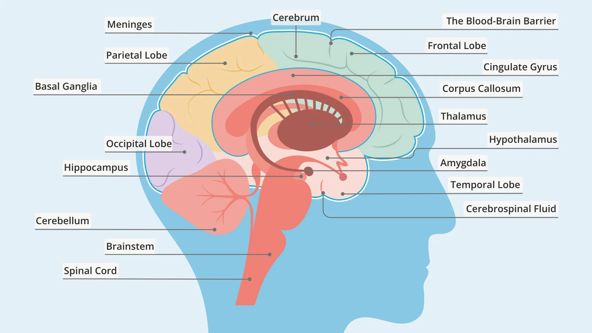
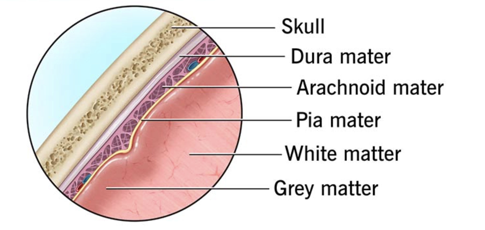
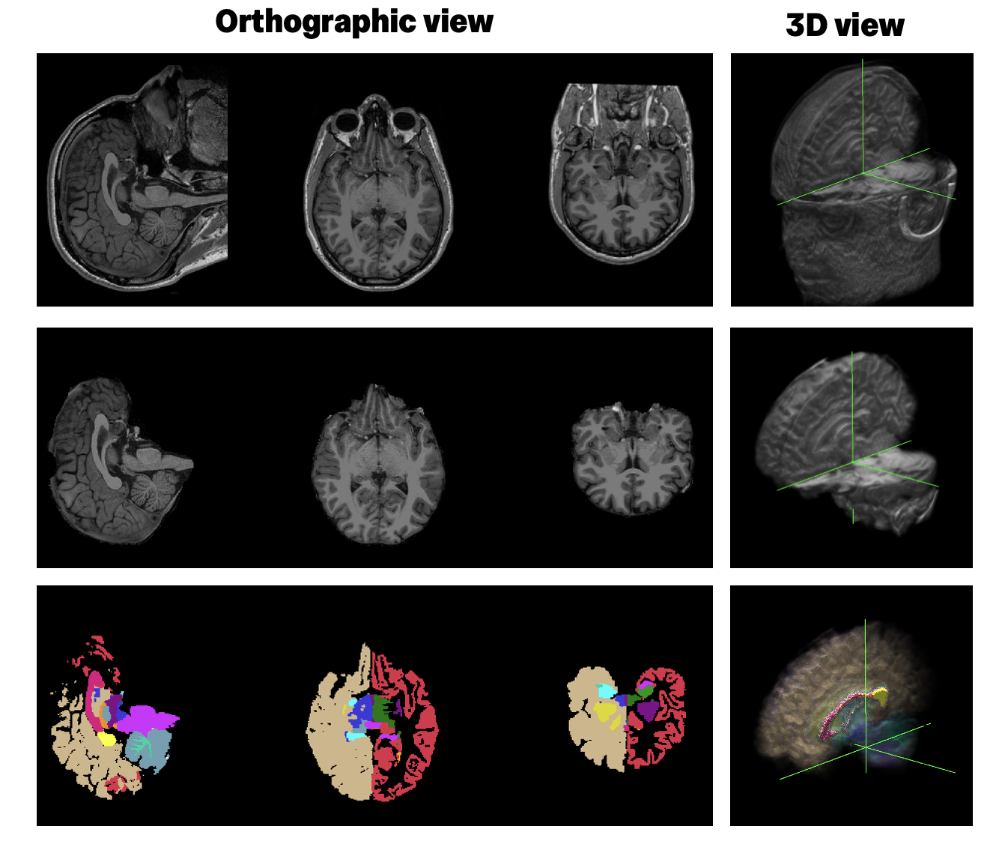

Background: Brain Anatomy, MRI, and Input Images
Finite element (FE) methods can be used to simulate how structures deform under loading. In brain biomechanics, brain FE models are useful because they allow us to estimate brain deformation in situations where direct measurement is difficult or impossible. To do this, we first need a geometric representation of the brain that can be discretised into elements for computation.
Because brain anatomy varies between individuals, a single generic brain geometry cannot fully represent the population. Subject-specific brain FE meshes are therefore important, as they better capture anatomical differences between individuals and provide a more realistic basis for later simulation.
In this project, we go through the full pipeline for turning a brain scan into a subject-specific finite element (FE) mesh. Using a sample scan from a healthy subject, you will see how raw imaging data can be processed into a mesh that captures the shape of an individual brain. Once you understand the workflow, the same approach can be applied to other brain scans too — in other words, it can be used to generate a brain FE mesh for any subject with the right imaging input. The final output of this project is the FE mesh itself, which describes the brain geometry in a form ready for numerical analysis. To turn this mesh into a complete FE model for simulation, the mesh would need to be combined with additional files such as material properties, boundary conditions, and loading definitions.
Basic brain structure
The brain can be thought of as several connected tissue compartments rather than one single solid structure. The main bulk of the brain is made up of grey matter and white matter. Grey matter includes the cerebral cortex and several deeper structures such as the thalamus, caudate, putamen, hippocampus, and amygdala. White matter contains fibre pathways that connect different brain regions, including the corpus callosum, which links the left and right cerebral hemispheres.
The brain also contains fluid-filled spaces called ventricles. These include the lateral ventricles, third ventricle, and fourth ventricle. The ventricles contain cerebrospinal fluid (CSF), which also surrounds the outside of the brain in the subarachnoid space. CSF is important because it separates the soft brain tissue from the skull and forms part of the brain–skull interface.

Figure 1. Basic brain anatomy. Image source: Everyday health.
Several protective membranes surround and support the brain. The pia mater is a thin membrane closely attached to the brain surface, while the dura mater is a tougher outer membrane lining the inside of the skull. Some parts of the dura fold inward to form internal partitions. The falx separates the left and right cerebral hemispheres, and the tentorium separates the cerebrum from the cerebellum.

Figure 2. Layers of the brain. Image source: Cleveland Clinic, Brain: Anatomy, Function, and Conditions.
The brain sits inside the skull, with skin forming the outer head surface. For finite element modelling, these outer structures are also useful because they help define the full head geometry rather than only the brain itself. The skull provides the rigid outer boundary, while the skin defines the external head shape.
In this project, the final model represents many of these anatomical compartments as separate labelled parts. The detailed internal brain labels mainly come from the FreeSurfer anatomical segmentation, while FSL-derived masks are used to complete the CSF, skull, and skin regions. Additional structures such as the falx, tentorium, dura, and pia are included later during model generation so that the final mesh better represents the main anatomical boundaries needed for head impact simulation.
Magnetic resonance imaging
The starting point of this project is a magnetic resonance imaging (MRI) scan of the brain. MRI is a widely used way of imaging soft tissues inside the body, and it is especially useful for the brain because it can show anatomical detail much more clearly than many other imaging methods. Instead of looking at function or activity, here we are interested in structural MRI, which shows the shape and internal structure of the brain.
In this project, the main scan type is a T1-weighted MRI. This is one of the most common structural brain scans used in both hospitals and research. It gives a clear view of brain anatomy and provides good contrast between different tissues, which makes it a strong starting point for image processing and mesh generation.
However, the scan straight from the scanner is only the beginning. Before it can be used to generate an FE mesh, it needs to be processed so that the brain can be separated from surrounding tissues and different anatomical regions can be identified more clearly.
Preparing input image
T1-weighted image is processed generated by FreeSurfer recon-all, an automated process for structural brain MRI analysis. The recon-all performs a sequence of cortical reconstruction steps including intensity normalisation, skull stripping, and subcortical segmentation, and it produces a large set of outputs for different stages of brain image processing, including skull-stripped images, tissue segmentations, surface reconstructions, anatomical labels, and other intermediate files.
Three FreeSurfer outputs are used in this workflow: T1.mgz, brain.mgz, and aseg.mgz.
T1.mgzis the processed T1-weighted structural image. In FreeSurfer, this file is the intensity-normalised version of the input anatomical scan and serves as the main reference image for later steps.brain.mgzis the brain-extracted image. It keeps the brain while removing non-brain tissues, making later processing easier to focus on the anatomy of interest. In the standard FreeSurfer stream, skull stripping produces the brain mask volumes used for this purpose.aseg.mgzis the automated segmentation file. It contains labels for major anatomical regions and tissue classes, providing structural information that is useful for downstream processing.

We do not run recon-all as part of this project for two reasons. First, it is a fully automated preprocessing step, so there is not much to demonstrate once the input scan has been given to the software. Second, it can take a long time to complete for one subject, usually a few hours (sometimes up to 40 hours!). To keep this project focused and practical, we start from pre-generated FreeSurfer outputs and use them directly in this mesh-generation pipeline.
As an initial step, these files are converted from the MGZ format to NIfTI (.nii.gz) format using FreeSurfer’s mri_convert tool. NIfTI is a common neuroimaging file format and is easier to use in the processing steps that follow.
Further reading
- Guidance for running recon-all from raw MRI data is available in the official FreeSurfer documentation.
- FreeSurfer Short Course by Andy's Brain Book.